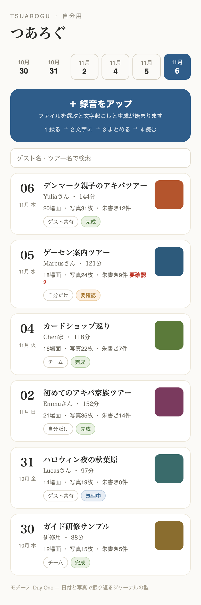
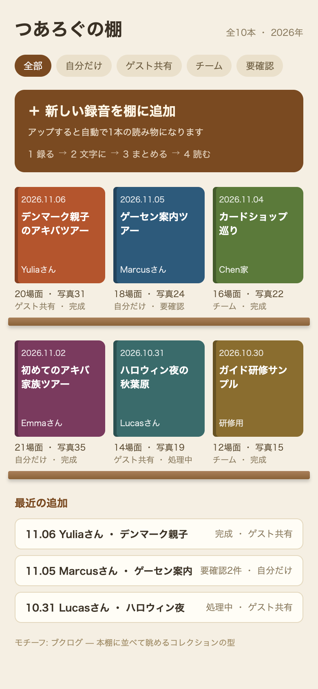
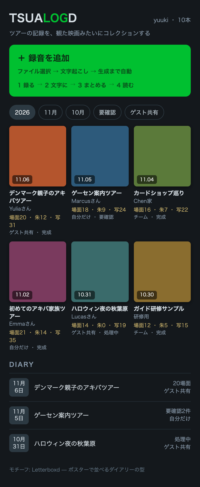
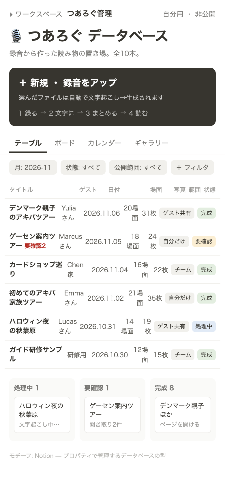
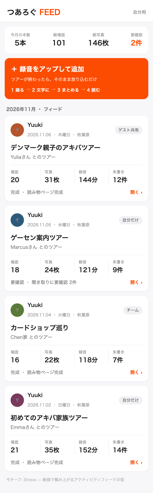

録音ファイルをアップしてログをどんどん追加していく、自分専用の管理ページのデザイン5案です。実在するログ・日記系サービスの管理画面の型を、1案ずつ下敷きにしています。全案に共通で「録音をアップする大きな入口」「ログ一覧（日付・ゲスト／場面数／写真数／公開範囲／状態）」「検索・絞り込み」「各ログから読み物ページを開く導線」が入っています。一覧の先頭は実物の Yuliaさん回（2026.11.06）で、残りはモックです。カードをタップすると実寸の案が開きます。

モチーフ: Day One（カレンダー＋写真のジャーナル）。日付の帯と日付カードで振り返る、明るく穏やかな型。毎日の記録そのものが主役になります。
実寸で開く ›

モチーフ: ブクログ（棚に並べるログ）。「つあろぐの棚」に本みたいに並べるコレクション型。公開範囲のチップで絞り込み、最近の追加も棚の脇に。
実寸で開く ›

モチーフ: Letterboxd（ポスターグリッドの日記）。観た映画みたいにツアーをコレクションするダーク基調。ポスターの棚＋DIARYリストで、眺める楽しさが一番強い案です。
実寸で開く ›

モチーフ: Notion（データベース／ボード）。テーブルで場面・写真・公開範囲・状態をプロパティ管理する実務型。ビュー切替（テーブル／ボード／カレンダー）と状態サマリー付き。
実寸で開く ›

モチーフ: Strava（アクティビティフィード）。今月の本数・総場面・総写真の数値サマリー付きで、積み上がりが見える活動フィード型。1本ごとの数値が並びます。
実寸で開く ›
番号で選んでください。選ばれた案を土台に、管理ページ本体を実装します。これはデザイン案のボードで、本体（kyo-no-koe）には触っていません。